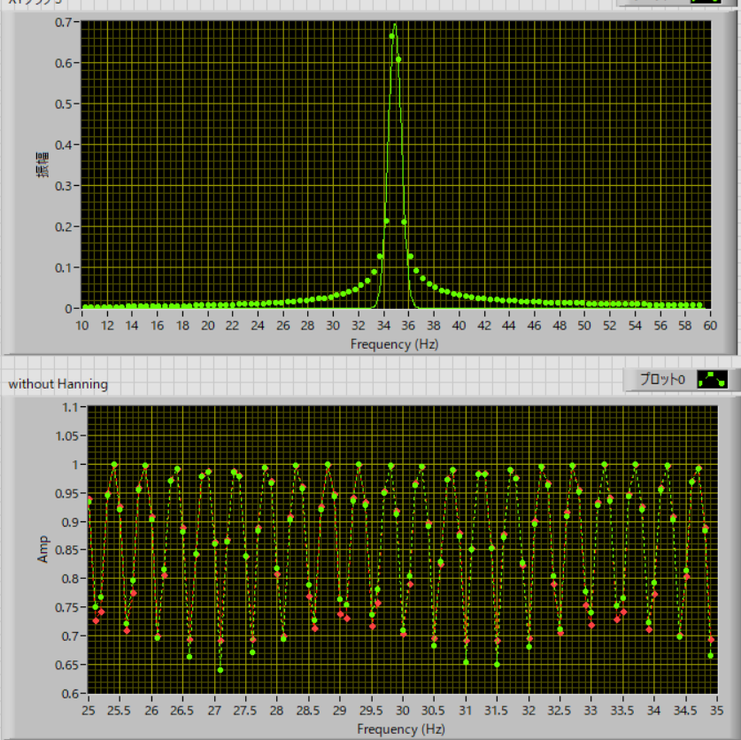
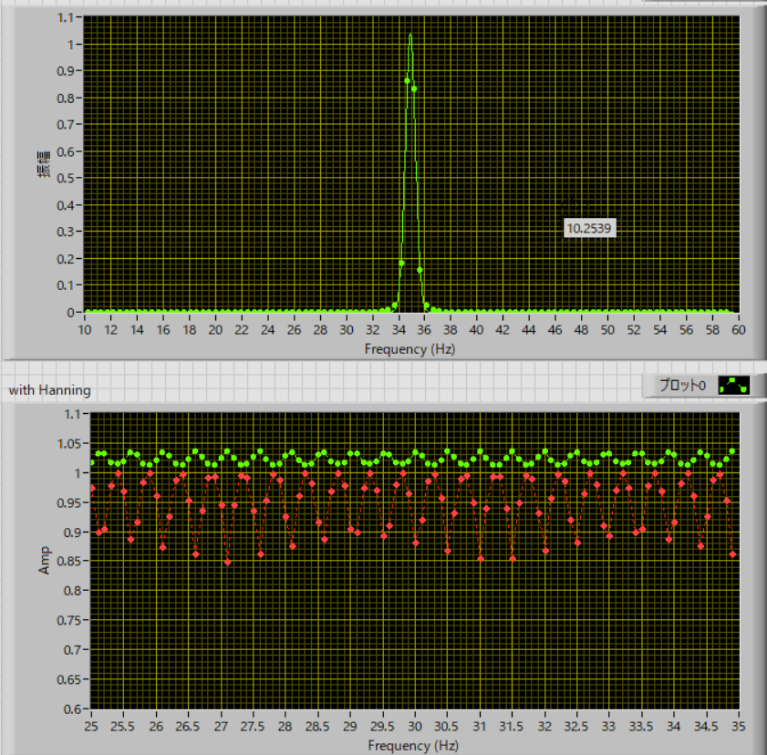

・ガウス関数近似の検討
FFTのスペクトルをガウス関数近似して，ピーク値を推定したらもっと精度が上がるのでは？という期待から検討してみます．
これは，あくまで思考実験であり，理論的根拠があるわけではないことに注意です．
・窓関数無し

そもそも，スペクトルがガウス関数でないので，無理やり，という感じですね．
生ピーク値とガウス近似のピーク値の比較が下の図になりますが，ほとんど効果がないことがわかります．
・窓関数アリ

これは結構いい感じで，うまくガウス関数で近似でき，近似ピークも，1～1.03，あたりで落ち着いています．
ちょっと大きめに出るのが気になりますが．．．．
ただこれは，df，に依存しそうですね．．．dfを細かくすれば効果がなくなるのかもしれない．．．．